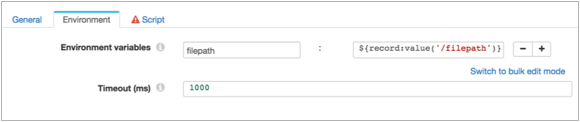

Shell Executor
The Shell executor executes a shell script every time it receives an event. Use the Shell executor as part of an event stream.
When you configure the executor, you define the shell script that you want to execute and environment variables to propagate configuration for the script. You also specify the maximum amount of time for the shell script to run. After the specified time elapses, the executor stops the script.
For more information about dataflow triggers and the event framework, see Dataflow Triggers Overview.
Data Collector Shell Impersonation Mode
Enable the Data Collector shell impersonation mode to enable the secure use of shell scripts. You enable the impersonation mode by configuring the shell impersonation mode property in the Data Collector configuration file. Enabling the impersonation mode is not required, but strongly recommended. You can also configure related shell and sudo properties as needed.
The Shell executor runs a user-defined shell script each time the stage receives an event. By default, Data Collector executes the script as the operating system user who starts Data Collector. Thus, using the default configuration means that the shell script can stop Data Collector as well as any other tasks the user has the rights to perform.
When you enable shell impersonation mode, the scripts are executed by the user who starts the pipeline. To use this option, the Data Collector user who starts the pipeline must have a corresponding operating system user account, and sudo must be configured to allow passwordless use. For greater security, you can also limit the permissions for the operating system user account to restrict its access.
- For each user who starts Shell executor pipelines, create a matching user
account in the operating system and configure permissions as needed.
For example, if Data Collector users Ops1 and Ops2 start all pipelines, create Ops1 and Ops2 user accounts in the operating system and grant them limited permissions.
- Ensure that the each of the operating system users has passwordless sudo for Data Collector.
- Uncomment the following property in the Data Collector configuration
file:
stage.conf_com.streamsets.pipeline.stage.executor.shell.impersonation_mode=CURRENT_USER - Restart Data Collector.
For more information, see Configuring Data Collector.
Using a Partial Control Hub User ID
When Data Collector is registered with Control Hub, you can configure Data Collector to use an abbreviated version of the Control Hub user ID for shell impersonation mode.
<ID>@<organization ID>You can configure Data Collector
to use only the ID, ignoring "@<organization
ID>". For example, using myname instead of
myname@org as the user name.
You might need to use a partial Control Hub user ID when the target operating system uses Kerberos, LDAP, or other user authentication methods with user name formats that conflict with the Control Hub format.
To enable using a partial Control Hub user ID for a registered Data Collector, uncomment the dpm.alias.name.enabled property in the Control Hub configuration file. For more information, see Control Hub Configuration File.
Script Configuration
- When you configure the shell script, ensure that the script returns zero (0) to
indicate successful execution. For example, in a bash script, you can use "exit
0" to return the required zero value.
A script that does not return zero might run successfully when tested on the command line, but will generate errors when used by the Shell executor in a pipeline.
- You cannot use expressions directly in the shell script. To use Data Collector expressions in a script:
- Use the Environment Variables property in the stage to declare environment variables for the script. Create an environment variable for each expression that you want to use.
- Use the environment variables as needed in the script.
For example, say you want to perform an action on a file that was closed by a Hadoop FS destination - one that you cannot perform with the HDFS File Metadata executor. And you want to use the filepath field in the event record to specify the absolute path to the closed file.
So you can define a filepath environment variable using the following expression:
${record:value('/filepath')}as shown below, then use the filepath environment variable in the script:
Configuring a Shell Executor
-
In the Properties panel, on the General tab, configure the
following properties:
General Property Description Name Stage name. Description Optional description. Required Fields 
Fields that must include data for the record to be passed into the stage. Tip: You might include fields that the stage uses.Records that do not include all required fields are processed based on the error handling configured for the pipeline.
Preconditions Conditions that must evaluate to TRUE to allow a record to enter the stage for processing. Click Add to create additional preconditions. Records that do not meet all preconditions are processed based on the error handling configured for the stage.
On Record Error Error record handling for the stage: - Discard - Discards the record.
- Send to Error - Sends the record to the pipeline for error handling.
- Stop Pipeline - Stops the pipeline. Not valid for cluster pipelines.